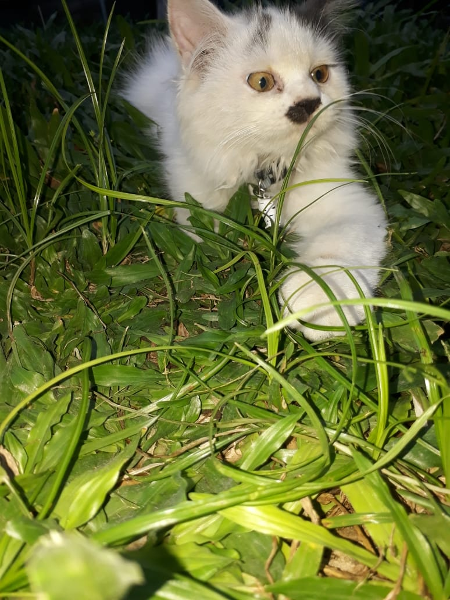
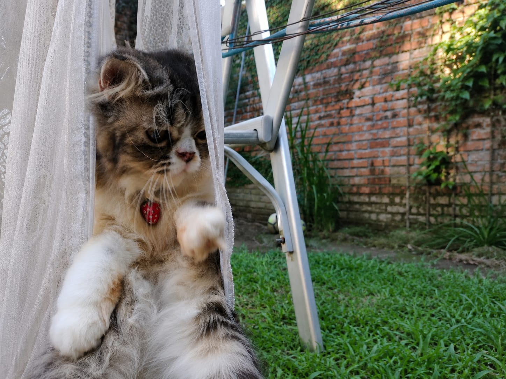

SELAMAT DATANG DI MEMORY KAMI
WEB INI DIGUNAKAN UNTUK MENGENANG KUCING KUCING KAMI
JELAJAH
Kucing pertama kami bernama Katty. Katty lahir sekitar tahun 2015 dan menjadi bagian penting dalam hidup kami sejak kecil. Dia bukan cuma hewan peliharaan, tapi juga teman yang selalu ada di rumah dan membawa banyak kenangan lucu. Katty punya kebiasaan yang unik, yaitu suka disuapi memakai sendok. Setiap kali makan, dia terlihat manja dan tenang saat disuapi. Tingkahnya itu sering membuat keluarga tertawa karena jarang ada kucing yang mau makan seperti manusia. Selain itu, Katty juga sangat aktif dan suka mengejar jangkrik di sekitar rumah. Kalau melihat jangkrik, dia langsung berlari cepat dengan semangat seolah sedang berburu. Selama bertahun-tahun, Katty menemani hari-hari kami dengan tingkah lucu dan sifatnya yang menggemaskan. Namun, pada awal tahun 2025, Katty berpulang. Rasanya sangat sedih kehilangan kucing pertama yang sudah dianggap seperti keluarga sendiri. Walaupun begitu, kenangan tentang Katty akan selalu tersimpan di hati dan tidak akan terlupakan.

Kucing kami yang lain bernama Cici. Cici lahir sekitar tahun 2015, sama seperti Katty. Cici adalah kucing yang sangat manja dan selalu ingin dekat denganku. Salah satu hal yang paling aku ingat darinya adalah kebiasaannya memijit perutku dengan kaki kecilnya. Rasanya hangat dan menenangkan, apalagi saat sedang lelah atau berbaring di rumah. Cici juga punya sifat yang lucu dan sedikit usil. Dia suka menyembunyikan mainannya sendiri supaya bisa dimainkan sendirian. Kadang mainannya tiba-tiba hilang, lalu beberapa hari kemudian ditemukan di tempat persembunyiannya. Tingkahnya itu sering membuatku gemas dan tertawa. Di antara semua kucing yang pernah kupelihara, Cici termasuk yang paling manja dan perhatian. Sayangnya, Cici berpulang lebih dulu sekitar tahun 2023. Kehilangannya membuat rumah terasa lebih sepi. Meskipun begitu, semua kenangan bersama Cici akan selalu aku ingat dan menjadi bagian berharga dalam hidupku.
Images courtesy of Unsplash
TENANG DI SANA YAA ;)
Ada banyak opsi pilihan rumah sakit untuk hewan anda, contohnya Katty & Cici
ANDA BISA MEMBERIKAN KESAN PESAN ANDA MELALUI LAMAN INI